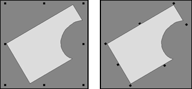
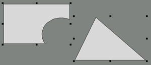
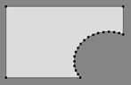

<!-- Documentation Xclamation (c)1994-2000 AXENE contact axene@axene.org>
<html>
<head>
<title>Manipulation des cadres</title>
</head>

<body BGCOLOR="#FFFFFF" BACKGROUND="Images/back.gif" TEXT="#000000">
<p ALIGN="right">

<p>
<br>
<br>
Il existe deux modes de sélection de cadres&nbsp;: le mode poignées
et le mode sommets. Ces deux modes sont identiques, excepté le
fait que le mode poignées permet de redimensionner la sélection
de cadres globalement alors que le mode sommets permet de changer
la forme des cadres sommet par sommet. Dans chacun de ces modes,
il est possible de sélectionner, désélectionner,
dupliquer, déplacer des cadres à l'intérieur
du plan d'affichage, les détruire, les
passer d'un document à un autre et de changer
leurs attributs.
<br>

<ol>
  <li><a NAME="select_frame">
     <b>Sélection de cadre</b>&nbsp;: sélectionner
     un cadre permet de le désigner comme cible des opérations
     ultérieures. Un cadre est sélectionné quand il
     est entouré de poignées ou que ses sommets sont
     affichés. 
     Il existe différentes
     façons de sélectionner un ou plusieurs cadres&nbsp;:
     </a><p>
     <ul>
       <li><b>Sélection simple</b>&nbsp;: pour sélectionner un
	  cadre précis, il suffit de cliquer à l'intérieur
	  de celui-ci avec le bouton gauche de la souris. Tous les cadres
	  précédemment sélectionnés 
	  seront désélectionnés.
	  <p>
       <li><b>Sélection multiple</b>&nbsp;: de nombreuses
	  opérations
	  peuvent affecter plusieurs cadres en même temps. Il faut pour
	  cela que la sélection comporte plusieurs cadres.
	  La sélection multiple s'effectue de la
	  même façon que la sélection simple en maintenant
	  la touche <tt>Shift</tt> pressée lors du clic. En mode
	  sommets, les sommets de tous les cadres ainsi
	  sélectionnés sont affichés. En mode
	  poignées, la multi-sélection est toujours
	  entourée des huit poignées de redimensionnement.
	  <p>
       <li><b>Sélection par zone</b>&nbsp;: cette méthode de
	  sélection permet de sélectionner tous les cadres
	  contenus dans une zone rectangulaire. 
	  <ol>
	    <li>Cliquer en dehors de tout cadre, avec le bouton gauche 
	       de la souris.
	    <li>Maintenir le bouton enfoncé et déplacer le curseur 
	       souris.
	    <li>Relâcher le bouton de la souris pour désigner 
	       le point de destination.
	  </ol>
	  Tous les cadres contenus intégralement dans la zone rectangulaire
	  définie par le point d'origine et le point destination
	  seront sélectionnés.
	  Il est
	  également possible de maintenir la touche <tt>Shift</tt>
	  enfoncée lors de toute cette opération pour que les
	  cadres contenus dans la nouvelle zone de sélection 
	  s'ajoutent à la sélection de cadres
	  précédente.
	  <p>
     </ul>

  <li><a NAME="deselect_frame"><b>Désélection de cadre</b>&nbsp;:
     il existe deux méthodes pour désélectionner
     un ou plusieurs cadres&nbsp;:
     </a><p>
     <ul>
       <li><b>Tout désélectioner</b>&nbsp;: pour
	  désélectionner
	  tous les cadres, il suffit d'un simple clic avec le bouton gauche 
	  de la souris dans le <a HREF="Document_Window.html#view_area">plan
	  d'affichage</a>
	  et à l'extérieur de tout cadre.
	  <p>
       <li><b>Désélection simple</b>&nbsp;: dans une
	  sélection multiple, il est possible de
	  désélectionner un cadre
	  particulier tout en gardant les autres dans la sélection.
	  Pour cela, il suffit de cliquer tout en maintenant la 
	  touche <tt>Shift</tt> enfoncée,
	  à l'intérieur du cadre à
	  désélectionner.
     </ul>

     <p>
  <li><a NAME="move_frame"><b>Déplacement de cadre</b>&nbsp;: 
     Pour déplacer un cadre ou un groupe de cadre, il faut qu'une 
     sélection de cadre soit effective. Il existe deux techniques pour 
     déplacer cette sélection.<br>
     <p>
     <b>Méthode 1</b>, procéder comme suit&nbsp;:
     <ol>
       <li>Cliquer sur un des cadres de la sélection,
	  pour la saisir.
       <li>Déplacer la souris. Le contour du ou des cadres suit le 
	  déplacement et permet de se positionner à
	  l'endroit voulu.
       <li>Cliquer pour déposer la sélection à
	  son nouvel emplacement.
     </ol>
     <p>
     La <i>méthode 1</i> permet d'utiliser les ascenseurs
     du plan d'affichage pour positionner la page pendant le 
     déplacement de la sélection.
     <p>
     <b>Méthode 2</b> ou <b>Glisser-déposer</b>,
     procéder comme suit&nbsp;:
     <ol>
       <li>Cliquer sur un des cadres de la sélection,
	  pour la saisir, et maintenir le bouton enfoncé.
       <li>Déplacer la souris. Le contour du ou des cadres suit le 
	  déplacement et permet de se positionner à
	  l'endroit voulu.
       <li>Relâcher le bouton de la souris pour déposer
	  la sélection 
	  à son nouvel emplacement.
     </ol>
     <p>
     La <i>méthode 2</i> permet de déplacer les cadres
     à l'intérieur
     du <a HREF="Document_Window.html#view_area">plan d'affichage</a>
     mais aussi en dehors. Elle permet de passer une sélection de cadre 
     d'une <a HREF="Document_Window.html">fenêtre de document</a>
     à une autre. Il est également possible,
     avec cette seconde méthode, de lâcher la sélection
     de cadre sur le 
     <a HREF="Main_Interface.html#trash_icon_vbar">bouton icône
     poubelle</a> de la barre verticale d'icône, afin de
     détruire les cadres sélectionnés.
     <p>      
     Dans les deux cas, 
     il est possible d'annuler un déplacement en cours (avant
     le positionnement du point de destination) en cliquant sur le bouton
     droit de la souris. Le déplacement de la sélection
     de cadre est affecté par le magnétisme.
     <p>
     <b>Nota&nbsp;:</b> Il est possible de déplacer un cadre 
     non sélectionné avec la deuxième méthode.
     Il suffit pour cela de commencer l'étape 1 en positionnant la
     souris sur le cadre à déplacer. Ce cadre est
     automatiquement sélectionné.
     </a><p>
  <li><a NAME="dup_frame"><b>Duplication de cadre</b>&nbsp;: la duplication
     de cadre s'effectue exactement de la même manière
     que le déplacement de cadre hormis le fait qu'il faut presser
     la touche <tt>Shift</tt> pendant toute la durée de cette
     opération.
     </a><p>
  <li><a NAME="attributs_frame"><b>Attributs des cadres</b>&nbsp;: il
     est possible d'appeler la boîte de dialogue
     '<a HREF="Box_Frame_Attributes.html">Attributs des cadres</a>'
     en double cliquant sur un cadre qu'il soit sélectionné
     ou non. Si ce cadre fait parti d'une sélection de plusieurs
     cadres, les attributs
     de tous les cadres de la sélection pourront être
     changés à l'intérieur de cette boîte
     de dialogue.
     </a><p>
</ol>
<p>
<br>
<hr>
<center>
<h2><a NAME="handles_mode">Sélection de cadre en
mode poignées.</h2></a>
</center>
<br>
La sélection en mode poignées permet d'effectuer
les opérations suivantes&nbsp;: redimensionner la sélection
de cadre, <a HREF="Frame_Selection_Modes.html#select_frame">sélectionner</a>, 
<a HREF="Frame_Selection_Modes.html#deselect_frame">désélectionner</a>,
<a HREF="Frame_Selection_Modes.html#dup_frame">dupliquer</a>, 
<a HREF="Frame_Selection_Modes.html#move_frame">déplacer</a>
des cadres et
de changer leurs <a HREF="Frame_Selection_Modes.html#attributs_frame">attributs</a>. 
<p>

<a NAME="simple_select"><h3>Simple sélection</h3></a>
<dl>
  <dd>
     Lorsqu'un seul cadre est sélectionné, des
     <b>poignées</b>
     apparaissent aux sommets du rectangle virtuel circonscrivant ce
     cadre ainsi qu'au milieu des arêtes de ce rectangle. Les
     poignées aux sommets permettent de redimensionner le cadre
     en diagonale et les poignées au milieu des arêtes
     permettent de redimensionner le cadre horizontalement et verticalement.
     <p>
     <center>
     
     <br>
     <i><small>
     Schéma&nbsp;: Sélection d'un cadre en mode poignées
     </i></small>
     </center><p>
     <br>
     <p>

  <dt>
     <a NAME="Simple_resize"><h3>Redimensionnement simple</h3></a>
  <dd>
     Lorsque l'on approche le curseur souris de l'une des huit poignées,
     sa forme change et prend la forme d'une flèche indiquant la direction
     vers laquelle le
     cadre peut être redimensionné. Pour redimensionner un cadre, 
     il faut&nbsp;:
     <ol>
       <li> Prendre une poignée (en cliquant dessus avec le bouton gauche de
	  la souris).
       <li> Déplacer la souris
       <li> Relâcher la poignée (en cliquant à nouveau avec le bouton droit).
     </ol>
     <p>
     Il est aussi possible de cliquer sur la poignée, puis en laissant le bouton de la
     souris enfoncée, faire glisser, puis relâcher le bouton lorsque la nouvelle taille
     est atteinte.
     <p>
     Le redimensionnement est affecté par le magnétisme.

     <p><br><p>

  <dt>
     <a NAME="rotate_resize"><h3>Redimensionnement en rotation</h3></a>
  <dd>
     L'utilisation de la touche Shift permet de visualiser les poignées avec
     l'angle de rotation du cadre. Par exemple, pour un cadre rectangulaire en rotation, elle permet 
     le redimensionnenent de ce cadre en conservant l'apparence rectangulaire
     de celui-ci (conservation des angles droits). 
     <p>
     <center>
     
     <br>
     <i><small>
     Schéma&nbsp;: Sélection d'un cadre en rotation (sans et avec SHIFT)
     </i></small>
     </center><p>
     <br><p>

  <dt>
     <a NAME="multiselect"><h3>La multisélection</h3></a>
  <dd>
     Lorsque plusieurs cadres sont sélectionnés, les
     huit poignées sont placées sur le contour du rectangle
     virtuel circonscrivant tous les cadres de la sélection.
     Déplacer ces poignées permet de redimensionner globalement,
     de la même façon, tous les cadres de la sélection.
     <p>
     <center>
     
     <br>
     <i><small>
     Schéma&nbsp;: Multisélection de cadres
     </i></small>
     </center><p>
     <p>
     <br>
     <p>

  <dt>
     <h3>Redimensionnement d'un seul cadre d'une multisélection</h3>
  <dd>
     Si l'on maintient pressée la touche Shift, chaque cadre
     sélectionné est entouré par huit poignées.
     Ces poignées seront placées sur le contour du rectangle
     virtuel circonscrivant chaque cadre. 
     C'est exactement comme si l'on avait plusieurs  
     <a HREF="Frame_Selection_Modes.html#simple_select">sélections
     simples</a>
     en même temps (execpté que l'angle de rotation de chaque
     cadre est pris en compte comme dans la 
     <a HREF="Frame_Selection_Modes.html#rotate_resize">sélection
     en rotation</a>).
     <p>
     <center>
     
     <br>
     <i><small>
     Schéma&nbsp;: Multisélection de cadres avec la touche Shift
     </i></small>
     </center><p>
     <p>
     <center>
     
     <br>
     <i><small>
     Schéma&nbsp;: Redimensionnement d'un cadre d'une multisélection
     </i></small>
     </center><p>

     Donc maintenir la touche Shift permet de changer les dimensions des
     cadres de la sélection individuellement et de conserver les
     angles le cas échéant.
     <p>
     <br>
     <p>

  <dt>
     <h3>Annulation en cours de redimensionnement</h3>
  <dd>
     Il est possible, en cours de redimensionnement (avant d'avoir lâché
     la poignée), de cliquer sur le bouton droit de la souris
     pour annuler cette opération. 
</dl>
<p>
<br>

<hr>
<center>
<h2><a NAME="vertices_mode">Sélection de cadre en mode sommets.</a></h2>
</center>
<br>
<p>
La sélection en mode sommets permet d'effectuer les opérations
suivantes&nbsp;: changer la forme d'un cadre point à point,
<a HREF="Frame_Selection_Modes.html#select_frame">sélectionner</a>, 
<a HREF="Frame_Selection_Modes.html#deselect_frame">désélectionner</a>,
<a HREF="Frame_Selection_Modes.html#dup_frame">dupliquer</a>, 
<a HREF="Frame_Selection_Modes.html#move_frame">déplacer</a>
des cadres à l'intérieur du plan d'affichage et
de changer leurs <a HREF="Frame_Selection_Modes.html#attributs_frame">attributs</a>. 
<p>
Dans ce mode de sélection, les cadres sélectionnés
apparaissent avec une petite poignée à chacun des
sommets de chaque cadre. 
<p>
<center>

<br>
<i><small>
Schéma&nbsp;: Sélection d'un cadre en mode Sommets
</i></small>
</center><p>

Il est possible de déplacer
individuellement chaque sommet pour modifier la forme du cadre.
Pour la déplacer, cliquer sur le sommet pour le saisir, déplacer
vers un autre endroit puis déposer le sommet en cliquant.
Cette opération est aussi applicable aux arêtes des cadres.
<p>
Dans ce mode, il est également possible de détruire 
ou d'ajouter des sommets avec les boutons icônes ou les options
du menu déroulant correspondants.
<p>
Il est possible, au cours du déplacement d'un sommet ou
d'une arrête (avant d'avoir lâché la poignée
ou l'arête), de cliquer sur le bouton droit de la souris
pour annuler cette opération. 
<p>
Le déplacement d'un sommet
ou d'une arête d'un des cadre sélectionné
est affecté par le magnétisme.
<p>
<br>
<hr>
<p ALIGN="right">
<p>
</body>
</html>


